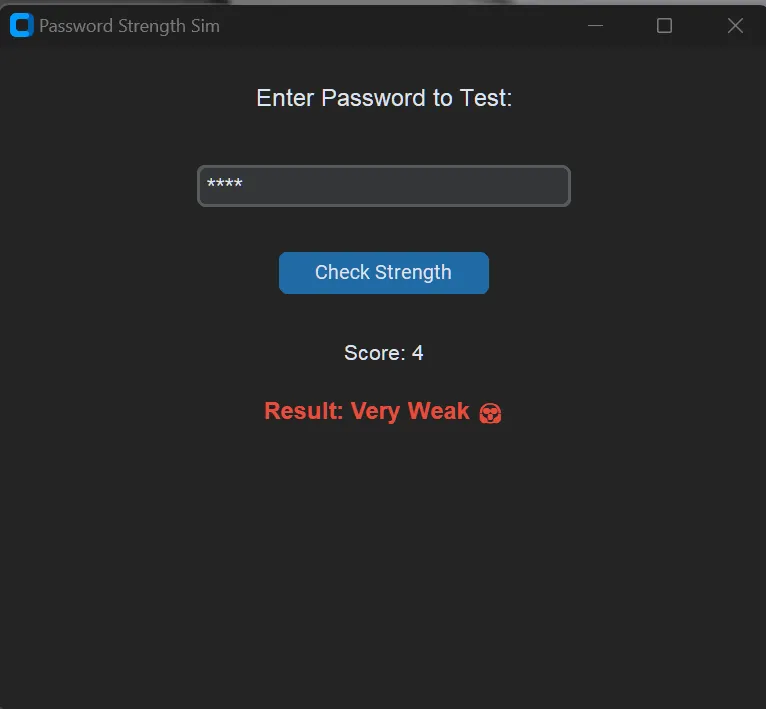
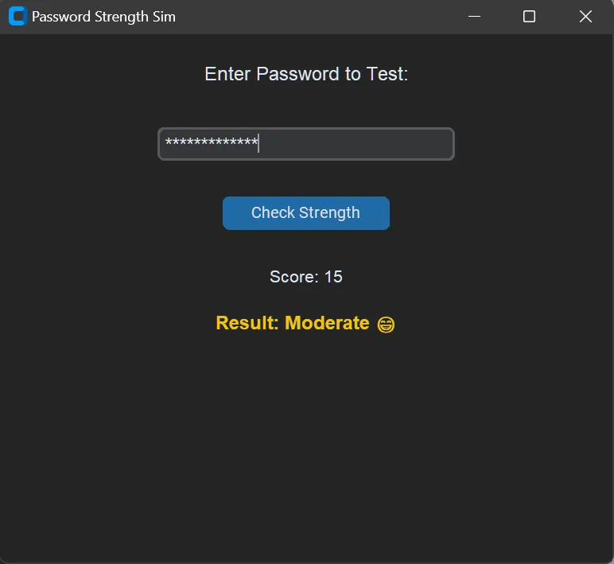
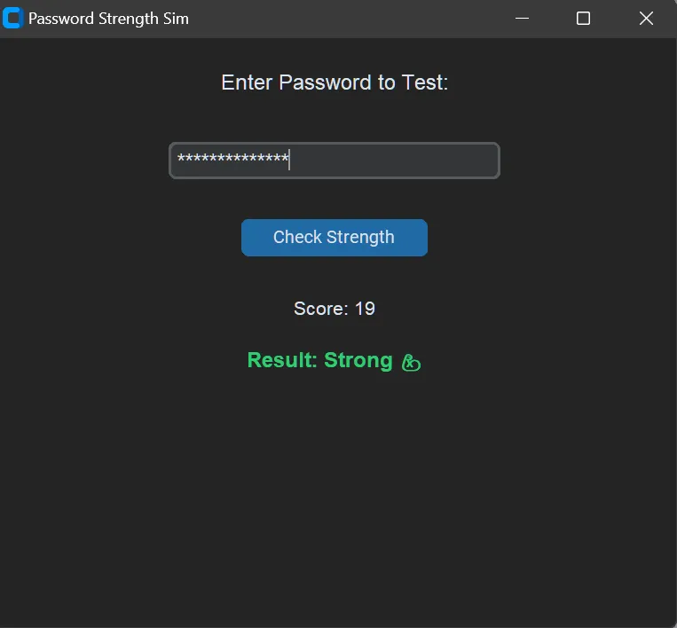

Password Strength Sim


A lightweight, modern, and password analysis tool built with Python, NumPy, and CustomTkinter. This project demonstrates how to use vectorized math to score password security and log audit data in real-time.
🚀 Features
Vectorized Scoring:
Uses NumPy's np.clip and np.select for lightning-fast character analysis.
Modern GUI:
A sleek, Dark Mode interface powered by CustomTkinter.
Real-time Feedback:
Dynamic color-coded results (Strong 💪, Moderate 😁, Weak 😟).
Security Logging:
Automatically generates a Password_log.log file to track audit history (without saving the actual passwords for safety!).
Regex Integration:
Detailed checks for digits, special characters, and uppercase letters.
Screenshots



🛠️ Installation
Clone the repository:
git clone https://github.com/reory/password-strength-sim.git
cd password-strength-sim
Install dependencies:
pip install numpy customtkinter
Run the app:
python gui.py
🧠 How It Works (The NumPy Logic)
This app doesn't just use standard Python loops. It treats password metrics as data arrays.
Length Clipping:
Uses $np.clip(length, 0, 12)$ to ensure length contributes a maximum of 12 points to the total score, preventing "length-padding" from tricking the system.
Categorization:
Uses $np.select(conditions, choices)$ to map numerical scores to human-readable labels instantly.
🗺️ Future Roadmap
[ ] Common Password Blacklist: Use NumPy to cross-reference a database of 10,000+ leaked passwords.
[ ] Entropy Meter: Implement a Shannon Entropy formula for scientific randomness scoring.
[ ] Password Generator: A button to create high-entropy, randomized passwords.
[ ] Data Visualization: A popup graph showing your password strength trends over time.
- Built By Roy Peters 😁